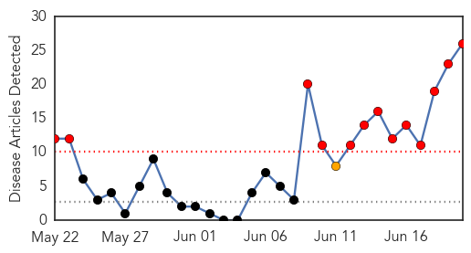
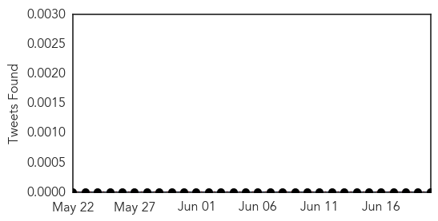

Unknown
30-Day Web Trend
0 alerts, 0 warnings

30-Day Twitter Trend
1 alerts, 0 warnings

Article Locations


Article Confidences

Top Articles:
- 0.940
- Franklin County salmonella outbreak grows to 14 cases, state health department says
- 0.935
- Morocco advises against hajj due to MERS threat
- 0.917
- Chicago Tribune
- 0.917
- Chicago Tribune
- 0.917
- Chicago Tribune
- 0.917
- Chicago Tribune
- 0.917
- Chicago Tribune
- 0.917
- Chicago Tribune
- 0.917
- Chicago Tribune
- 0.917
- Chicago Tribune
- 0.917
- Chicago Tribune
- 0.917
- Chicago Tribune
- 0.917
- Chicago Tribune
- 0.917
- Chicago Tribune
- 0.917
- Chicago Tribune
- 0.917
- Chicago Tribune
- 0.917
- Chicago Tribune
- 0.917
- Chicago Tribune
- 0.917
- Chicago Tribune
- 0.910
- The world windows to Thailand
- 0.910
- The world windows to Thailand
- 0.899
- U.S. authorities issue conditional license for PEDv vaccine to fight deadly pig virus
- 0.883
- Shigella Outbreaks in Texas, South Dakota and Indiana
- 0.866
- 13 killed in attack on police station in China's Xinjiang
- 0.866
- Obama, Hollande call on Russia to de-escalate Ukraine tensions
- 0.866
- U.S. concerned about buildup of Russian troops near Ukraine
- 0.862
- Ministry of Health of the Kurdistan region of lraq reports critical shortages in medicines, seeks support from the World Health Organization - Iraq
- 0.819
- CDC says possibly 75 scientists exposed to live anthrax.
- 0.812
- CDC: 80 May Have Been Exposed to Anthrax
- 0.783
- Up to 86 CDC Lab Workers Possibly Exposed to Anthrax Bacteria
- 0.741
- 75 CDC scientists possibly exposed to anthrax
- 0.721
- CDC scientists may have been exposed to anthrax due to safety lapse
- 0.710
- Scientists may have been exposed to anthrax
- 0.690
- Baptist Health will spend more than $1 million for staff, patients garments designed to minimize infection risk
- 0.678
- CDC: Possible US anthrax cases rise to 84
- 0.675
- The HPV Vaccination in Japan: Issues and Options
- 0.668
- Ancient parasite highlights humans' role in spread of disease
- 0.658
- US CDC to investigate lab workers' possible exposure to anthrax bacteria
- 0.656
- U.S. says government lab workers possibly exposed to anthrax
- 0.655
- Possible E. Coli and Salmonella outbreak in Morgan County
- 0.653
- Ghana, Business Advice, Jobs, News, Business Directory, Real Estate, Finance, Forms, Auto
- 0.649
- News affecting world travel 6/19/14
- 0.640
- US says govt lab workers possibly exposed to anthrax
- 0.614
- Lab workers possibly exposed to anthrax
- 0.606
- More US lab workers may have been exposed to anthrax
- 0.600
- Anthrax Scare Is Latest CDC Lab Security Lapse
- 0.591
- Anthrax scare at Centers for Disease Control
- 0.588
- 75 CDC employees may have been exposed to anthrax
- 0.536
- 84 CDC scientists possibly exposed to deadly bacteria
- 0.528
- CDC Says More Workers Potentially Exposed To Live Anthrax
Showing top 50 articles...
Top Tweets:
- 0.717
- RT: Trivalent flu vaccine mismatched for flu B 50% of the time. vaccineequity
Chikungunya
30-Day Web Trend
13 alerts, 1 warnings

30-Day Twitter Trend
0 alerts, 0 warnings

Article Locations

Article Confidences

Top Articles:
- 0.999
- Oklahoma reports first chikungunya case in Tulsa County resident
- 0.999
- Dominican Republic accounts for 47 percent of chikungunya cases in the Caribbean
- 0.999
- First case of chikungunya confirmed In Georgia
- 0.999
- Mosquito-borne chikungunya virus plaguing Caribbean may be headed for U.S.
- 0.999
- Florida, Georgia report cases of Chikungunya virus: Here's what you can do to protect yourself
- 0.998
- First case of mosquito-borne disease confirmed in Georgia
- 0.998
- First Oklahoma case of chikungunya confirmed in traveler
- 0.996
- Carribbean and Central America Threatened by Chikungunya Virus
- 0.994
- New virus slams Caribbean, threatens Florida
- 0.994
- Health Officials Confirm Two Cases of Chikungunya Fever
- 0.993
- Mississippi investigates possible chikungunya virus case
- 0.992
- Several Cases of a Mosquito Borne Virus Found in Virginia
- 0.992
- Haiti records nearly 40,000 chikungunya cases, triple PAHO's report a week ago
- 0.992
- New Mosquito-Borne Disease Chikungunya Hits GA
- 0.991
- Caring for a chikungunya patient
- 0.988
- Chikungunya case confirmed in Tulsa County
- 0.987
- Health official says Jamaica prepared to deal with chikungunya outbreak
- 0.986
- Oklahoma Has Its First Case of Chikungunya
- 0.986
- African Viral Disease Spreads
- 0.984
- Health Officials Monitoring Spread Of Rare Mosquito Borne Virus Chikungunya « D Healthcare Daily
- 0.981
- First Oklahoma Case Of Chikungunya Virus Confirmed
- 0.979
- First Oklahoma case of chikungunya virus confirmed
- 0.971
- Church group taking precautions as they head to Haiti
- 0.954
- Arizona at risk for new mosquito virus
- 0.949
- Chikungunya Virus Has Spread To US
- 0.945
- Haiti chikungunya case count nears 40,000
Top Tweets:
-
No tweets found for Jun 20, 2014